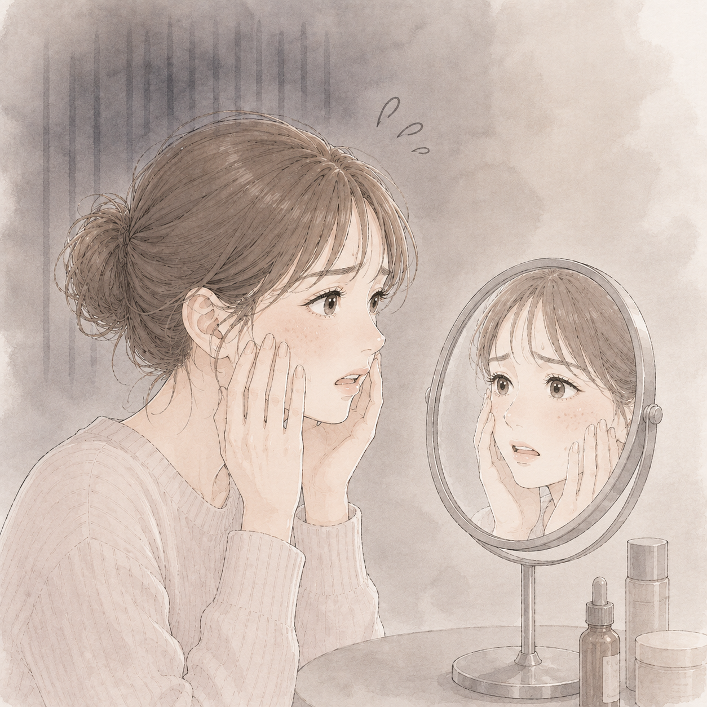
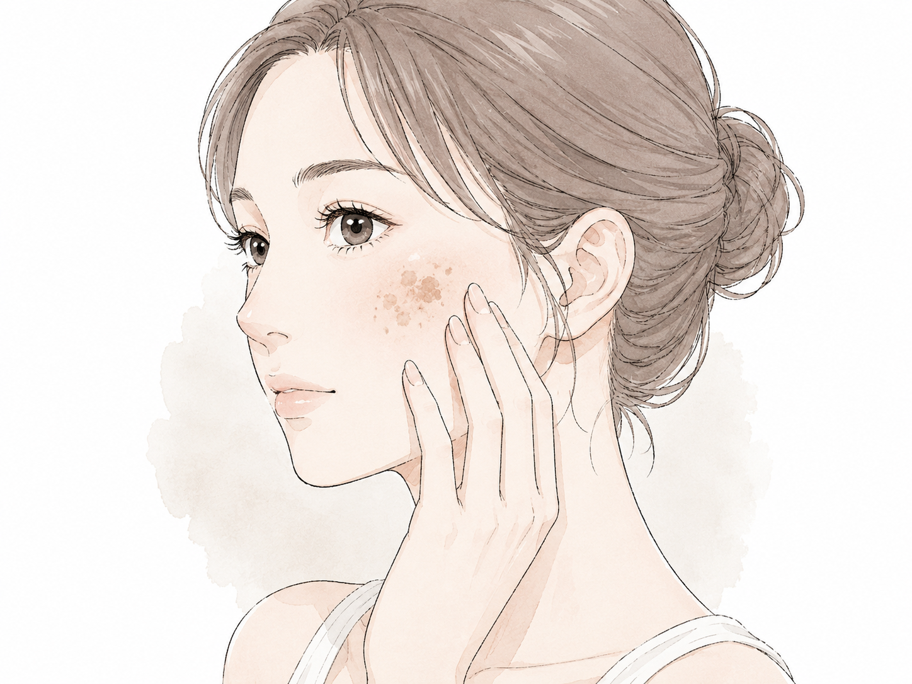

30代になって、はじめて自分の顔と向き合った話。
UN.編集部
29歳のある朝、ふと鏡を見る時間が短くなっていることに気づきました。 この記事では、30代で初めて美容医療と向き合った体験をもとに、 シミの原因から改善できる施術の選択肢まで正直にお伝えします。 同じように悩んでいる方の背中を少し押せたら嬉しいです。
シミって、気づいたときにはもう遅い？
29歳の終わりごろ、頬骨のあたりに薄茶色の点が増え始めた。 最初は「日焼けかな」と思っていたけど、秋になっても消えない！ 冬になっても…消えない！どうしよう…。

シミができる主な原因
紫外線を浴びると、肌を守るためにメラニン色素が生成される。 本来は肌のターンオーバーで自然に排出されますが、 30代以降はターンオーバーのサイクルが遅くなるため、 メラニンが蓄積してシミになりやすくなる傾向にあります。
- 紫外線の蓄積（日焼け止めを塗らない習慣）
- ターンオーバーの低下（30代以降に顕著）
- ホルモンバランスの変化（妊娠・ストレスなど）
- 摩擦・炎症後の色素沈着

シミの種類
一口に「シミ」といっても種類があり、 種類によって適した施術が異なる。 まずは自分のシミがどのタイプかを知ることが大切です！

コスメで隠すことに、疲れた
しばらくはカバー力の高いファンデーションを探し続けた。コンシーラーも試した。 でも気づいたら朝の貴重な時間で「隠す」ことにエネルギーを使いすぎていて、時間がもったいないと感じ始めた。
——隠すんじゃなくて、なくしたいな。
そう思ったとき、はじめて美容クリニックを調べ始めた。
美容クリニックでシミに使われる施術
調べてみると、シミに対してクリニックでできることはいくつかある。 まずは全体像を比較表で確認してみましょう！
施術比較表
| 施術名 | 効果 | ダウンタイム | 料金目安 | 向いている人 |
|---|---|---|---|---|
| ピコレーザー | ◎ 高い | 数日〜1週間 | 1〜3万円/回 | 濃いシミを早く消したい |
| ピコトーニング | ○ 中程度 | ほぼなし | 1〜2万円/回 | ダウンタイムを避けたい |
| IPL（光治療） | ○ 中程度 | ほぼなし | 1〜2万円/回 | マイルドに継続ケアしたい |
ピコレーザー
ピコレーザーは、極めて短いパルス幅のレーザーをシミに照射し、 メラニン色素を細かく破壊する施術。 従来のレーザーと比べて肌へのダメージが少なく、 ダウンタイムが短いのが特徴。
ピコトーニング
ピコトーニングは出力をおさえて肌全体に照射するタイプで、 ダウンタイムがほぼなく日常生活への影響が少ない。 肝斑や全体的なくすみに向いている。
IPL（光治療）
IPLはシミだけでなくくすみや赤みにも対応できるマイルドな施術で、 肌への負担が少なく継続ケアに向いている。
美容クリニック、正直こわかった…
「美容クリニック」って聞くと、なんとなく敷居が高い気がしてた。 お金がかかるイメージだし…勧誘されるイメージもあって、 なんか大げさな感じもしてた。 でも調べると、意外と気軽に行けるところも多かった…！
カウンセリングに行ってみた！
勇気を出してカウンセリングを予約した。 当日は緊張しすぎて、クリニックの前を一回通り過ぎた。笑 でも受付の人は普通で、先生も怖くなかった！
「こういう悩みがあって」と話したら、 肌の状態を見ながら施術の選択肢をいくつか提案してくれた。
——「今日決めなくて大丈夫ですよ」
と言ってくれた。え…全然勧誘してこないじゃん！
無事に施術をうけることができました！
施術後のアフターケア
せっかく施術を受けても、アフターケアを怠るとシミが再発したり、 効果が半減してしまうことがある。施術後の肌はとてもデリケートな状態なので、 いくつかのポイントをしっかり押さえておこう。
紫外線対策は絶対に欠かさない
施術後の肌は、通常よりも紫外線のダメージを受けやすい状態になっている。 特にピコレーザーやIPLを受けた後は、 施術部位が日焼けすると色素沈着が起きやすく、せっかくのシミ治療が台無しになってしまうことも。
日焼け止めは毎朝欠かさず塗ることはもちろん、曇りの日や室内にいるときも油断しないようにしよう。 SPF30以上・PA+++のものを選び、2〜3時間おきに塗り直すのが理想的です。
保湿を徹底する
施術後は肌のバリア機能が一時的に低下しているため、乾燥しやすい状態が続く。 乾燥した肌は炎症を起こしやすく、これが新たなシミや色素沈着の原因になることがある。
化粧水・乳液・クリームで丁寧に保湿を行い、肌に十分な水分と油分を補給しよう。 刺激の少ない低刺激タイプのスキンケアを選ぶのもポイントだ。
施術直後に避けるべきこと
- 激しい運動・サウナ・長風呂（肌が温まると炎症が悪化しやすい）
- 飲酒（血行促進により赤みや腫れが出やすくなる）
- 患部を強くこする・触る（かさぶたを無理に剥がさない）
- 刺激の強いスキンケアや香料入りの化粧品
アフターケアの期間の目安
施術の種類によって異なるが、一般的には1〜2週間程度は特に丁寧なケアが必要だ。 ピコレーザーの場合はかさぶたが自然に剥がれるまでの約1週間が最も大切な時期。 IPLやピコトーニングはダウンタイムが短い分、翌日からある程度通常のケアに戻せる場合が多い。
不安なことがあれば遠慮せずクリニックに相談しよう。 アフターケアについてもカウンセリングで丁寧に教えてくれるクリニックを選ぶと安心だ。
クリニックの選び方
実際に複数のクリニックを比べてみて、 選ぶときに大切だと感じたポイントをまとめた。
- シミ治療の施術メニューが充実しているか
- カウンセリング無料・当日施術不要かどうか
- 通いやすい立地・予約の取りやすさ
- 自分のシミのタイプと適した施術は何か
- 何回くらい通う必要があるか
- ダウンタイム中の注意点は何か
- 追加費用（麻酔代・薬代など）はかかるか
よくある質問
A.施術の種類やシミの濃さによって異なりますが、ピコレーザーの場合は1〜3回、IPLは5〜6回を目安にするクリニックが多いです。カウンセリングで医師に確認するのが確実です。
A.ピコレーザーは輪ゴムで弾かれるような軽い痛みがある場合があります。IPLやピコトーニングはほぼ痛みを感じないことが多いです。痛みが心配な場合は麻酔クリームを使用できるクリニックもあります。
A.施術の種類・部位・クリニックによって異なります。ピコレーザーは1回1〜3万円程度が目安です。複数回のコースプランを用意しているクリニックも多く、その場合は1回あたりの費用を抑えられる場合があります。
A.ピコレーザーの場合、照射部位にかさぶたができる場合があります。メイクでカバーできる程度のことが多く、多くの方は翌日から通常通り仕事に行けます。IPLやピコトーニングはほぼダウンタイムがなく、当日からメイク可能なことが多いです。
まとめ
あのとき鏡を見たくなかった自分に言いたいことがある。「向き合うのが怖いのはわかるけど、早く動いたほうがいいよ」って。
この記事のまとめ
- シミは30代以降ターンオーバーが遅くなり定着しやすくなる
- シミの種類によって適した施術が異なる
- ピコレーザー・ピコトーニング・IPLで自分に合った方法を選ぼう
- カウンセリングは無料のところも多く、当日決める必要はない
- 気になり始めたタイミングが一番動きやすいとき
この施術が得意なクリニックはこちら

※この記事はフィクションに基づく体験談です。実際の施術効果には個人差があります。
※料金はあくまで目安です。クリニックや施術内容によって異なります。詳しくは各クリニックにお問い合わせください。
※本記事は医療行為の推奨を目的としたものではありません。施術を検討される際は必ず医師にご相談ください。

○○ ○○ 先生
皮膚科専門医 / ○○クリニック院長
○○大学医学部卒業後、皮膚科専門医として15年以上のキャリアを持つ。美容医療・レーザー治療を専門とし、多くの症例を担当。